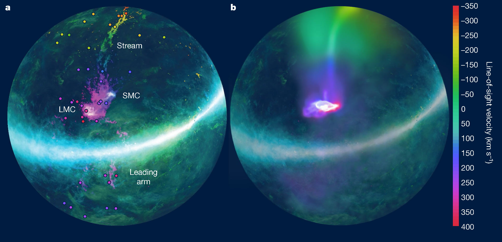

Press Releases
 Magellanic Stream arcing over Milky Way may be five times closer than previously thought
Magellanic Stream arcing over Milky Way may be five times closer than previously thought
November 22, 2021
UW Madison
 Astronomers model, determine how disk galaxies evolve so smoothly
Astronomers model, determine how disk galaxies evolve so smoothly How the Milky Way stole an enormous gas halo from our dwarf neighbours
How the Milky Way stole an enormous gas halo from our dwarf neighbours
September 10, 2020
University of Sydney
Massive halo finally explains stream of gas swirling around the Milky Way
September 9, 2020
UW Madison

Huge Halo of Warm Gas around Magellanic Clouds is Key to Formation of Magellanic Stream
September 9, 2020
Sci News
 The Leading Arm of the Magellanic Stream originates primarily from a nearby dwarf galaxy called the Small Magellanic Cloud
The Leading Arm of the Magellanic Stream originates primarily from a nearby dwarf galaxy called the Small Magellanic Cloud
March 22, 2018
Simons Foundation - CCA
 Hubble solves cosmic 'whodunit' with interstellar forensics
Hubble solves cosmic 'whodunit' with interstellar forensics